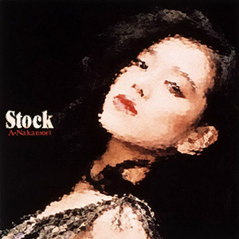

录音室专辑：第12张
发行年份：1988年
发行日期：3月3日
| 歌名 | 作词 | 作曲 | 编曲 |
|---|---|---|---|
| FAREWELL | 許瑛子 | 佐藤健 | 中村哲・北島健二 |
| 夢のふち | 飛鳥涼 | 後藤次利 | 後藤次利・中村哲 |
| CRYSTAL HEAVEN | YUKO | 都志見隆 | 松原正樹 |
| まだ充分じゃない | 佐藤ありす | 林哲司 | 松原正樹・北島健二 |
| FIRE STARTER | SANDII | 久保田真箏 | 村松邦男・北島健二 |
| NIGHTMARE 悪夢 | 大津あきら | 北島健二 | FENCE OF DEFENSE・北島健二 |
| I WANNA CHANCE | 許瑛子 | 鈴木キサブロー | 井上鑑・北島健二 |
| POISON LIPS | 湯川れい子 | 都志見隆 | 新川博・北島健二 |
| 処女伝説 | FUMIKO | 原田真二 | 小林信吾・北島健二 |
| FOGGY RELATION | 永井美由紀 | 佐藤準 | 佐藤準・北島健二 |
首发规格：黑胶 LP: L-12652，卡带 CT: LKF-8152，CD: 32XL-193
唱片公司：Reprise Records，Warner Pioneer
排行榜：Oricon公信榜专辑周榜第2位，1988年度榜第14位
再发行：
1991年6月17日 - CD: WPCL-424
2006年6月21日 - CD、数码下载: WPCL-10289
2006年7月26日 - 数码下载
2012年8月22日 - SACD/CD: WPCL-11147
2014年1月29日 - CD: WPCL-11733
2018年7月4日 - LP: WPJL-10096